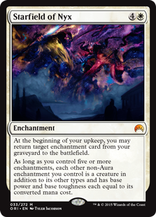
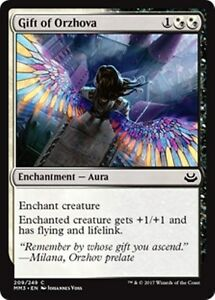
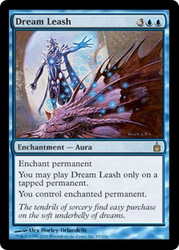
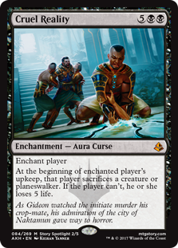
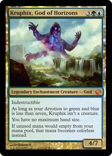
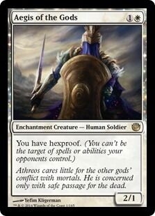
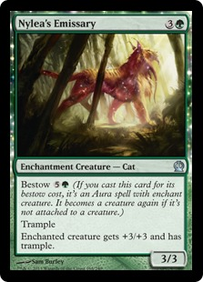

Enchanments
|  |
En esta sección hablaremos acerca de los encantamientos, sin duda alguna de los permanentes con mas antiguedad en el juego y de los mas utiles,
pero no solo son permanentes comunes y corrientes, algunos de ellos tienen funciones muy especificas que nos ayudan a explotar las debilidades de nuestro
oponente, como casi cualquier otro permanente en Magic el encantamiento solo puede ser jugado en las fases principales de los turnos de los jugadores, esto
como ya se ha mencionado puede ser alterado por ciertas habilidades ya sean propias del encantamiento u proporcionada por otros medios como es el caso de una
habilidad o un hechizo que le otorgue la habilidad de destello, mas adelante hablaremos de estas hablidades por el momento vamos a cubrir los distintos tipos de
encantamientos que existen en el juego de Magic |
Enchanment Aura
|  |
 |
 |
A diferencia de los encantamientos normales las auras afectan a un objeticvo especifico, por ejemplo el gift of orzhova encanta a una criatura dandole
+1+1, vuelo y vinculo vital, el dream leash te permite tomar poseseion de un permanente objetiv siempre y cuando este se encuentre tapado, las auras suelen ser
de gran utilidad incluso hay decks que llegan a girar en torno al uso de la mismas. |
Enchanment Creatures
|  |
 |
 |
Ahora tenemos el caso de encantamientos que comparten un segundo tipo de permanente como es el de la criatura, tenemos en el primer caso a Kruphix, God of horizons
que se toma como encantamiento solamente hasta que la condicion de devocion sea la idonea, cuando esto sucede se transforma en una criatura encantamiento, si la devocion
no es la minima Kruphix debe ser tomado en cuenta solo como un encantamiento afectando el campo de juego, el Aegis of the gods es un caso distinto al de Kruphix ya que este
mantiene siempre ambos tipos el de encantamiento y criatura siempre, si una una habilidad o un hechizo fuera a destruir un encantamiento el Aegis of the gods puede ser el objeticvo
de dicha hablidad o hechizo, por ultimo esta el Nylea´s emissary una criatura encantamiento que bien puede ser jugada como una criatura o bien si el jugador lo desea puede usarlo como
un encantamiento aura para equipar a otra criatura o permanente. |